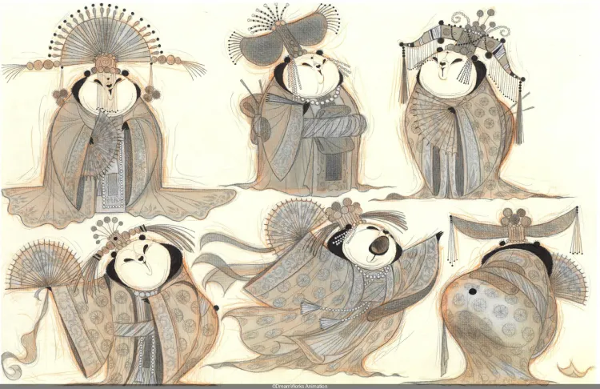
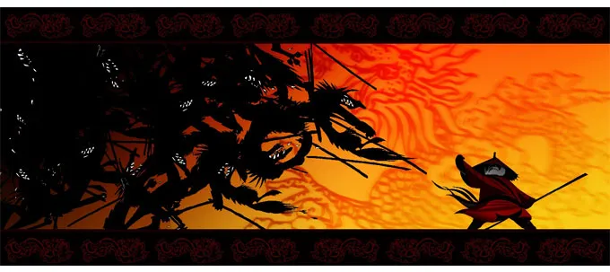

De l’art en 325 pages
Publié en 2014, ce livre écrit par Ramin Zahed retrace les plus gros succès du studio d’animation DreamWorks Animation, de « Fourmiz » (1998) à « Home » (2014) en passant par les « Shrek » (2001, 2004, 2007, 2010) ou encore les « Kung Fu Panda » (2008, 2011, le troisième est sorti après le livre). Cet ouvrage est très intéressant lorsqu’on aime les films d’animation, nous avons des images inédites, des dessins de prototype des personnages des films du studio, mais aussi des interviews des personnes ayant travaillés sur ces films.
Pour voir des extraits des interviews, cliquez ici.

Une panda danseuse en habits traditionnels chinois
Des interviews de ressenti
En lisant ces interviews, on voit leurs idées, leurs réussites, leurs frustrations ainsi que leurs espoirs pour les futurs films des franchises de DreamWorks Animation. On peut lire dans les interviews pour le film « Kung Fu Panda » que Melissa Cobb était heureuse que « les gens se sont vraiment identifiés à Po », ce qui peut être très difficile lorsque ce personnage est un panda qui plus est maître de kung fu.
Nous pouvons aussi lire qu’elle était déçue de ne pas pouvoir aller en Chine avant le premier film pour « s’imprégner » de la culture chinoise. Ils ont cependant pu y aller avant le deuxième et les gens là-bas « n’en revenaient pas que des artistes de Glendale, en Californie, aient réussi à reproduire leur art, leur spiritualité et tous les détails de leur culture dans un dessin animé ».

Po en habits traditionnels contre des loups
Des illustrations inédites
Tout au long du livre, nous avons des illustrations non tirées des films. Ces illustrations sont très intéressantes pour voir sur quelles idées les personnes qui ont travaillé sur le film, par exemple à la page 164, nous voyons Taï Lung dans une autre prison que celle présente dans le film. Il n’y a pas seulement les décors qui ont leurs premières versions, les personnages aussi, comme nous pouvons le voir à la page 53 avec Shrek.
 EN
EN